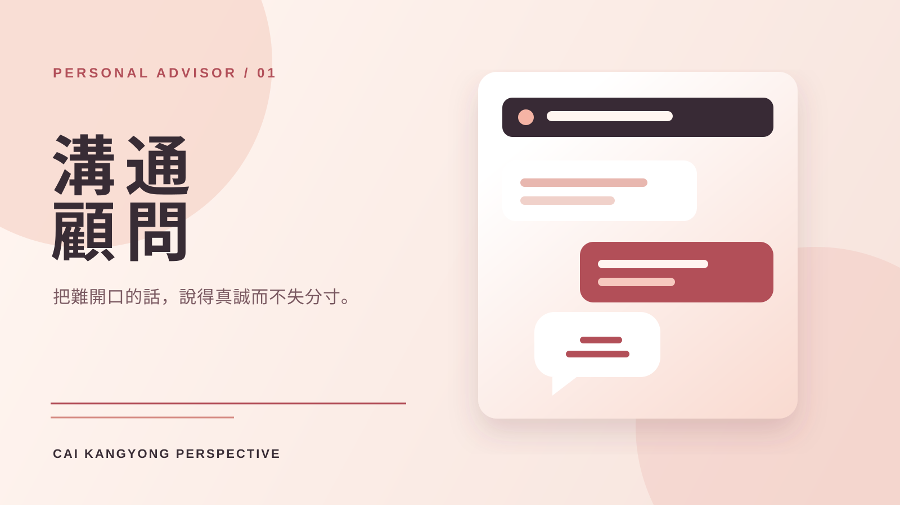

技能包 · 專屬顧問
蔡康永專屬關係與溝通顧問
2026.08 · 個人專案

FIG. 09 — 產品主畫面
關於這個作品
以新版蔡康永語料庫為基礎升級的專家 Agent，整合 50 多個來源，將關係理解、情緒主權與表達分寸轉為可操作的對話框架。
它特別適合處理難開口的話、關係中的界線、情緒表達與文字語氣調整；先辨識彼此真正的需求與情境，再提供既誠實、不失溫柔，也能保護自己的說法。
作品亮點
困難對話、關係界線與情緒表達建議
情緒主權與溫柔但清楚的界線練習
以提問釐清真正需求、情境與說話目的
提供可直接使用的說法與語氣版本